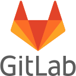
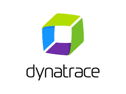
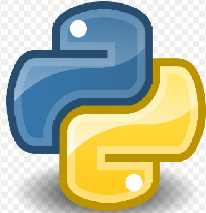
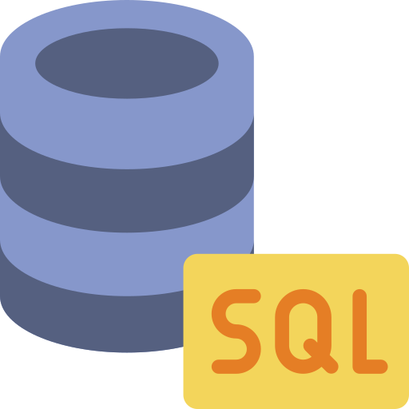
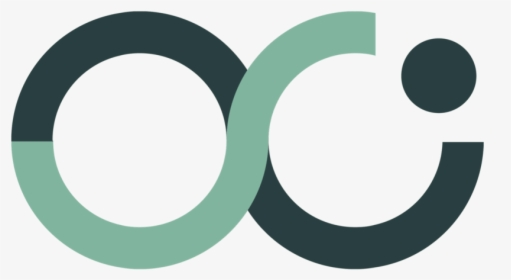
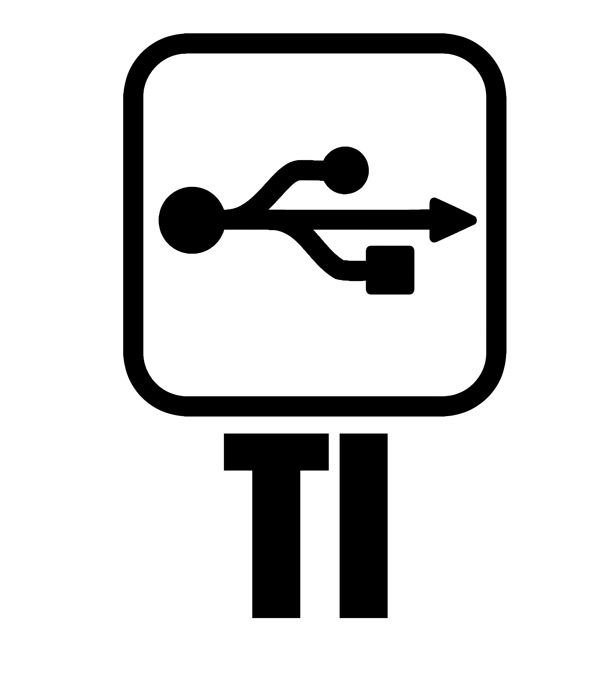

Sobre mim
Olá, me chamo Kalil Sekeff. Sou Engenheiro de Plataforma com experiência em infraestrutura on-premise e cloud, automação, observabilidade e CI/CD. Tenho interesse crescente em Inteligência Artificial aplicada à gestão e estou iniciando minha terceira pós-graduação em IA e Tecnologia na Gestão Pública.
Educação
Pós Graduando em Inteligência Artificial e Tecnologia na Gestão Pública Novo ✦
2026 — Em andamentoAplicação de IA, dados e tecnologias digitais para modernização e inovação na gestão pública, políticas baseadas em evidências e transformação digital do setor público.
Pós Graduando em Data Science and Business Intelligence
2022Estudo disciplinado em dados e informações empresariais, análise preditiva e suporte à decisão.
Pós Graduado em Computação Forense e Perícia Digital
2019Investigação de eventos envolvendo computadores e dispositivos móveis como meio ou auxílio à atividade criminosa.
Graduação em Ciências da Computação
2017.1Experiência Profissional
Engenheiro de Plataforma
03/2023 — HojeGestão de tickets via Jira. Criação de projetos usando GitLab, AWS, Jenkins, Ansible, Terraform e CI/CD. Provisionamento de VMs on-premise e na AWS usando IaC.
Analista de Infraestrutura
08/2022 — 03/2023Gestão de tickets via OTRS. Configuração e monitoramento com Zabbix em ambientes Linux/Windows. Cloud AWS para provisionamento de infraestrutura.
Assistente de TI PL
01/2021 — 07/2022Gestão de incidentes via ServiceNow. Monitoramento e disponibilidade de ativos com Zabbix.
Analista de Infraestrutura Trainee/Jr
12/2018 — 12/2020Suporte N1/N2/N3 via Jira Service. Virtualização com Proxmox, clouds (AWS, Linode, DigitalOcean), deploys, backups de bancos, scripts de automação e monitoramento com Zabbix.
Assistente de TI Trainee
08/2013 — 02/2014Suporte ao usuário N1, redes de computadores, montagem e manutenção de PCs.
Ferramentas & Tecnologias

GitLab
Dynatrace
Python
SQL
ServiceNow
Infra